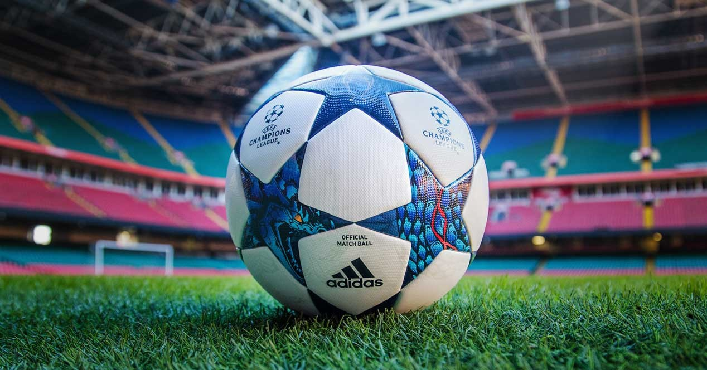

El deporte se practica entre dos equipos de 11 jugadores cada uno.
Debe de ser un rectángulo con medidas de entre 90 y 120 metros de largo, por no menos de 45 y no más de 90 metros de ancho.

La pelota o el balón deberá contar con un perímetro de entre 68 y 70 cm, con un diámetro de entre 21,65 y 22,29 cm.
El tiempo reglamentario es de 45 minutos cada tiempo, para un total de 90. Sin embargo, el árbitro central podrá añadir tiempo de compensación cuando el juego sea detenido por lesiones o algún otro incidente.
Para evitar cualquier polémica, el gol se decretará una vez que el balón rebase en su totalidad la línea marcada entre los 3 postes (portería).